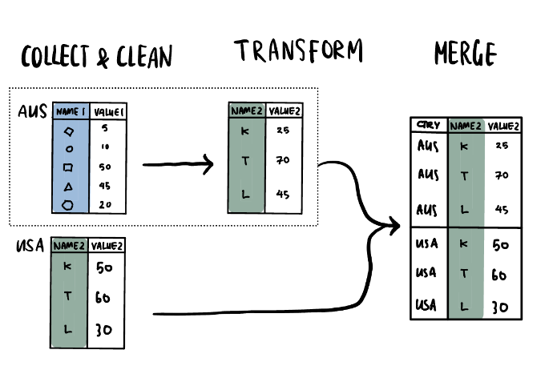
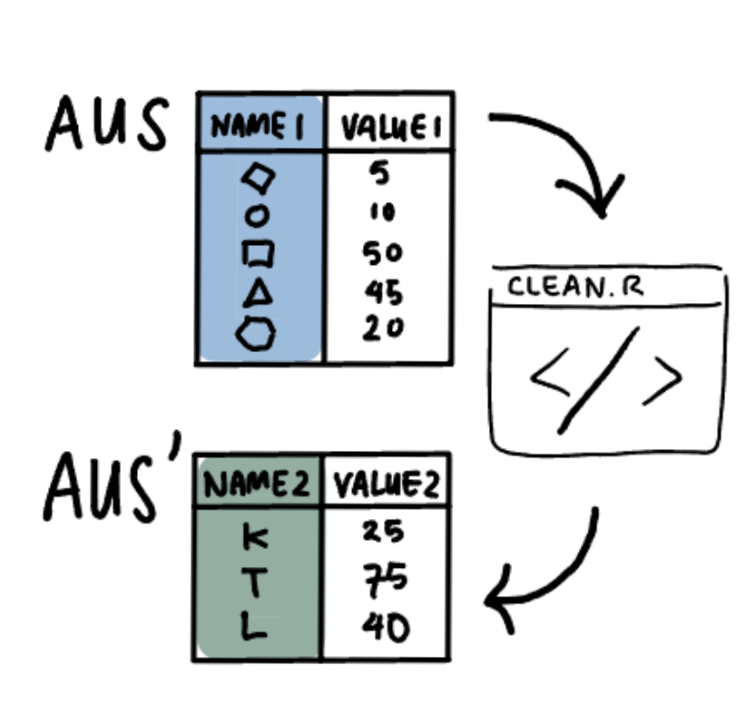
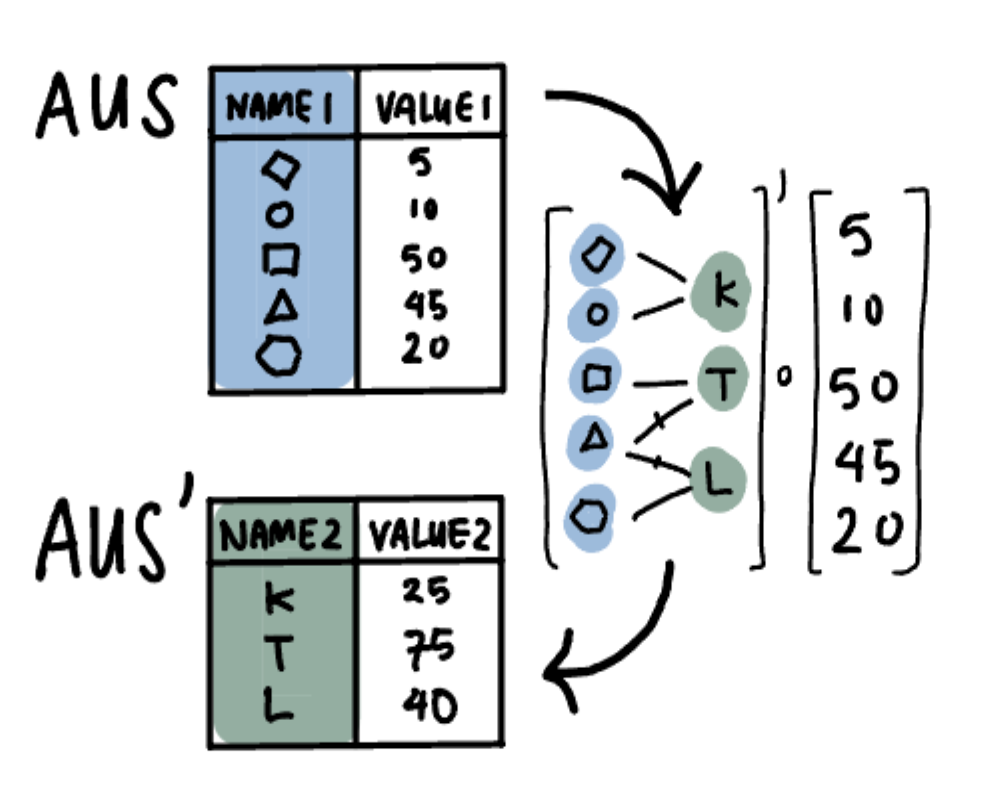
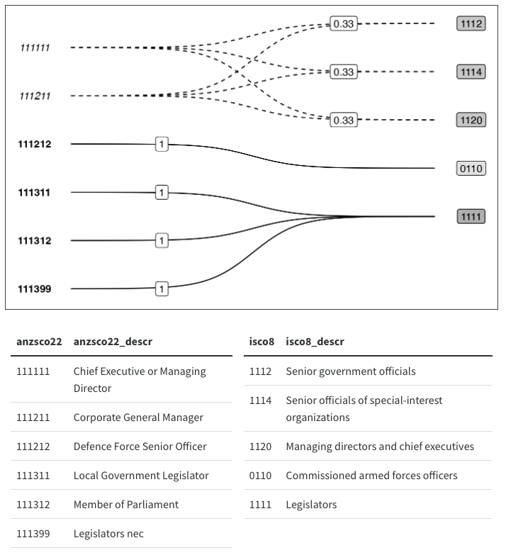
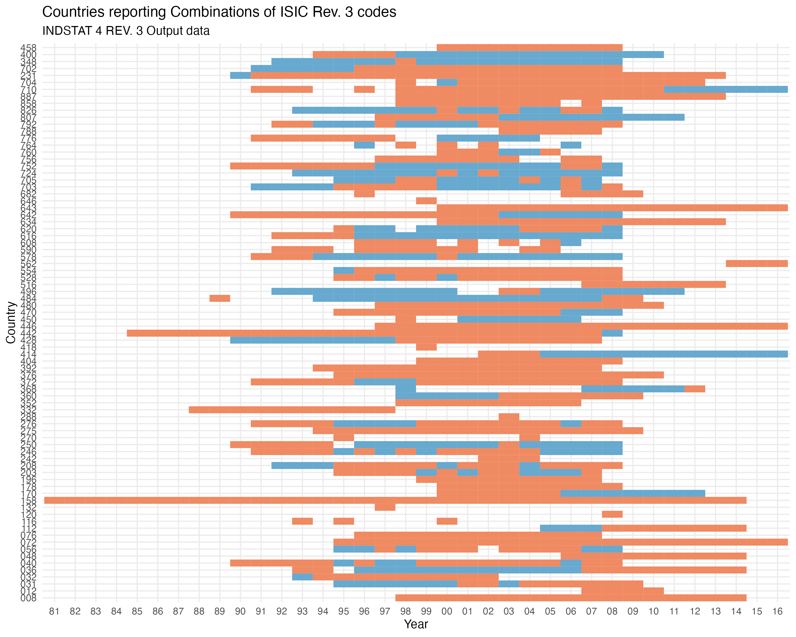

| anzsco22 | anzsco22_descr | count |
|---|---|---|
| 111111 | Chief Executive or Managing Director | 1000 |
| 111211 | Corporate General Manager | 500 |
| 111212 | Defence Force Senior Officer | 40 |
| 111311 | Local Government Legislator | 300 |
| 111312 | Member of Parliament | 150 |
| 111399 | Legislators nec | 10 |
Visualising Category Recoding and Redistributions
1st IEEE Workshop on Visualization and Across Domains at IEEE VIS
Cynthia Huang
Department of Econometrics and Business Statistics, Monash University
2023-10-23
Overview
Domain Context 
Official Statistics+
Task Abstraction 
Data Wrangling
Encoding Design1
Bi-graph Visualisation
Domain Context
Ex-Post Harmonisation (a non-technical definition)
- Combining semantically related data collected under different taxonomies into a single analysis dataset.
Task Abstraction
Cross-Taxonomy Transformations
Existing Approaches

- idiosyncratic coding scripts
- ad-hoc validation
split_isiccomb <- function(threefour_df){
#' Helper function to split isiccomb values across isic codes
#' @param threefour_df df with 3/4 digit values across isic & isiccomb
# make list for interim tables
interim <- list()
# extract rows with isiccomb codes
interim$isiccomb.rows <-
threefour_df %>%
filter(., str_detect(isiccomb, '[:alpha:]'))
# test that we are not losing any data through spliting
test_that("No `country,year` has more than one recorded `value` per `isiccomb` group", {
rows_w_many_values_per_isiccomb <-
interim$isiccomb.rows %>%
group_by(country, year, isiccomb) %>%
## get no of recorded (not NA) values for given `country, year, isiccomb`
summarise(n_obs = sum(!is.na(value))) %>%
filter(n_obs != 1) %>%
nrow()
expect_true(rows_w_many_values_per_isiccomb == 0)
})
# calculate average value over isiccomb group for each country, year
interim$isiccomb.avg <-
interim$isiccomb.rows %>%
# group isiccomb rows, replace na with 0 for averaging
group_by(country, year, isiccomb) %>%
mutate(value = replace_na(value,0)) %>%
# split combination value over standard isic codes in isiccomb group
summarise(avg.value = mean(value),
## checking variables
n_isic = n_distinct(isic),
n_rows = n()) %>%
mutate(row_check = (n_isic == n_rows))
# return(interim$isiccomb.avg)
## check n_isic == n_rows
test_that("isiccomb split average is calculated with correct denominator", {
expect_true(all(interim$isiccomb.avg$row_check))
})
# output processed data
final <-
left_join(threefour_df, interim$isiccomb.avg, by = c('country', 'year', 'isiccomb')) %>%
rename(value.nosplit = value) %>%
mutate(value = coalesce(avg.value, value.nosplit),
split.isiccomb = !is.na(avg.value)) %>%
select(country, year, isic, isiccomb, value, value.nosplit, split.isiccomb) # not checking variables
return(final)
}Aside on discipline silos
Of course, some desired integrations are simply unattainable. Consider changes to category schemas … the North American Industrial Classification System (NAICS) … replaced the previously used (and increasingly antiquated) Standard Industrial Code (SIC). The dramatic reorganization … leaves them nearly incomparable … Sometimes there is a limit to what one can wrangle. 1
schott_algorithm_28.do [800+ lines]
/*
HS-SIC-NAICS- Concordance Project
This program
1. reads in the hs-sic and hs-naics concordances from the monthly trade cd files and
from Census and uses two mechanical matches to fill in naics matches prior to 2000 and sic
matches after 2001.
2. Although step 1 succeeds in generating many matches, there are some that remain unmatched.
these were given to an RA (thanks kitjawat!) to match by hand. These hand matches are merged in
after the mechanical matches. (Note that one typo in the handmatched file is fixed in this .do file.
3. In the future, we intend to explore using our hs-over-time concordances to avoid the need for any
hand-matching.
copyright Peter K. Schott / Justin R. Pierce
This program, associated files and a working paper describing our overall HS-SIC-NAICS concordance effort
can be found at http://www.som.yale.edu/faculty/pks4/
2008.08.21 first version
2009.10.16 current version
2016.7.27 restored the older practice (89-106) of keeping SIC and naics codes as strings
so, in key place, subbed back in code from v20
also updated to use concordances from 89-115
2018.7.16 moved this all to /research/schott_trade_website
added the NAICSX codes
*/
**0 Prelim
clear
set more off
/*
global MC "D:\Dropbox (yale som economics)\research\schott_trade_website\hs_sic_naics\input\m_concordance\"
global XC "D:\Dropbox (yale som economics)\research\schott_trade_website\hs_sic_naics\input\x_concordance\"
global NC "D:\Dropbox (yale som economics)\research\schott_trade_website\hs_sic_naics\input\naics\"
global C "D:\Dropbox (yale som economics)\research\schott_trade_website\hs_sic_naics\"
global CI "D:\Dropbox (yale som economics)\research\schott_trade_website\hs_sic_naics\interim"
*/
global MC "/io/jrp_research/schott_trade_website/hs_sic_naics/input/m_concordance/"
global XC "/io/jrp_research/schott_trade_website/hs_sic_naics/input/x_concordance/"
global NC "/io/jrp_research/schott_trade_website/hs_sic_naics/input/naics/"
global C "/io/jrp_research/schott_trade_website/hs_sic_naics/"
global CI "/io/jrp_research/schott_trade_website/hs_sic_naics/interim/"
cd "$C"
*0 prep new (post 2016) concordances
/*
foreach y in "16" "17" {
foreach m in "12" /*"01" "02" "03" "04" "05" "06" "07" "08" "09" "10" "11" "12"*/ {
cd d:\data\raw_yale_trade\monthly
unzipfile EXDB`y'`m', replace
infix ///
double commodity 1-10 ///
str descrip_1 11-160 ///
str descrip_2 161-210 ///
str quantity_1 211-213 ///
str quantity_2 214-216 ///
double sitc 217-221 ///
double end_use 222-226 ///
str naics 227-232 ///
usda 233-233 ///
hitech 234-235 ///
using CONCORD.TXT, clear
label var commodity "10-Digit Harmonized Tariff Schedule (HTS) Code"
label var descrip_1 "150 digit description"
label var descrip_2 "50 digit description"
label var quantity_1 "3-digit unit of q 1"
label var quantity_2 "3-digit unit of q 1"
cd "$XC"
save concord_1`y', replace
}
}
foreach y in "16" "17" {
foreach m in "12" /*"01" "02" "03" "04" "05" "06" "07" "08" "09" "10" "11" "12"*/ {
cd d:\data\raw_yale_trade\monthly
unzipfile IMDB`y'`m', replace
infix ///
double commodity 1-10 ///
str descrip_1 11-160 ///
str descrip_2 161-210 ///
str quantity_1 211-213 ///
str quantity_2 214-216 ///
double sitc 217-221 ///
double end_use 222-226 ///
str naics 227-232 ///
usda 233-233 ///
hitech 234-235 ///
using CONCORD.TXT, clear
label var commodity "10-Digit Harmonized Tariff Schedule (HTS) Code"
label var descrip_1 "150 digit description"
label var descrip_2 "50 digit description"
label var quantity_1 "3-digit unit of q 1"
label var quantity_2 "3-digit unit of q 1"
cd "$MC"
save concord_20`y', replace
}
}
*/
**1 Assemble the concordance files from the Census trade
*files for the years 1989-2017
*1.1 Imports
cd "$MC"
use concord_1989, clear
gen year=1989
forvalues y=1990/2017 {
display["`y'"]
append using concord_`y'
replace year=`y' if year==.
if `y' <2000 {
keep commodity year sic
}
if `y' >=2000 {
keep commodity year naics sic
}
if `y'==2005 {
rename commodity scommodity
destring scommodity, force g(commodity)
}
}
cd "$CI"
duplicates drop
save concord_m_1989_2017_abbreviated, replace
*Check number of manufacturing codes
use concord_m_1989_2017_abbreviated, clear
gen man =substr(naics,1,1)=="3"
egen x = tag(naics year)
table year if x, c(sum man)
*1.2 Exports
cd "$XC"
use concord_89, clear
gen year=89
forvalues y=90/117 {
display["`y'"]
append using concord_`y'
replace year=`y' if year==.
*Note that NAICS codes are not reported until 2000
if `y' <100 {
keep commodity year sic
}
if `y' >=100 & `y'<=106 {
keep commodity year naics sic
}
if `y'==106 {
rename commodity scommodity
destring scommodity, force g(commodity)
rename sic ssic
}
if `y' >106 {
keep commodity year naics sic ssic
}
}
drop sic
rename ssic sic
replace year=year+1900
cd "$CI"
duplicates drop
save concord_x_1989_2017_abbreviated, replace
*check # man codes
*
* Dip in 2013 due to implementation of NAICS 2012
*
* But why recovery (somewhat) starting in 2014
*
use concord_x_1989_2017_abbreviated, clear
gen man =substr(naics,1,1)=="3"
egen x = tag(naics year)
table year if x, c(sum man)
**2 SIC Mapping
*Assigns SIC codes to HS codes for years after end of SIC
cd "$CI"
foreach zzz in x m {
*Create list of HS-SIC mappings for 2001
*(last year for which sic data are available)
use concord_`zzz'_1989_2017_abbreviated, clear
replace year=year-1900
keep if year==101
keep commodity sic
drop if sic==""
duplicates drop commodity, force
sort commodity
save `zzz'temp0, replace
*Match list of 2001 HS-SIC mappings to post-2001 years
use concord_`zzz'_1989_2017_abbreviated, clear
replace year=year-1900
keep if year>101
keep commodity
duplicates drop commodity, force
sort commodity
merge commodity using `zzz'temp0, keep(sic)
tab _merge
drop _merge
gen double hs=commodity
format hs %15.0fc
egen sic87=group(sic)
save `zzz'temp_01, replace
*Save two versions of group-naics mapping for below.
*These are simply used for labeling the source of
*HS-SIC matches.
use `zzz'temp_01, clear
collapse (mean) sic87, by(sic)
rename sic87 sic87_new1
rename sic sic_new1
drop if sic_new1=="" | sic87_new1==.
sort sic87_new1
save `zzz'temp1, replace
use `zzz'temp_01, clear
collapse (mean) sic87, by(sic)
rename sic87 sic87_new2
rename sic sic_new2
drop if sic_new2=="" | sic87_new2==.
sort sic87_new2
save `zzz'temp2, replace
*First Mechanical Match
*Look at SIC matches for HS10s within an HS9. If all non-missing
*SIC codes are the same, assign that SIC code to unmatched HS10s within
*that HS9. Repeat for higher levels of aggregation.
use `zzz'temp_01, clear
gen sic87_new1 = sic87
sum hs sic87*
quietly {
foreach x in 9 8 7 6 5 4 3 2 {
noisily display [`x']
local y = 10-`x'
gen hs`x' = int(hs/(10^`y'))
egen t1 = mean(sic87), by(hs`x')
egen t2 = sd(sic87), by(hs`x')
egen t3 = count(sic87), by(hs`x')
gen sic87_`x' = t1 if t2==0 | t3==1
replace sic87_new1 = sic87_`x' if sic87==. & sic87_new1==.
drop t1 t2 t3
drop hs`x' sic87_`x'
}
}
sum hs sic87 sic87_new1
sort hs
save `zzz'temp_02, replace
*Second Mechanical Match
*Sort HS codes. For unmatched HS codes (or contiguous groups of HS10
*codes), look at the matched HS10 codes that precede and follow. If
*matches for preceding and following HS10 codes are identical, assign
*that SIC code to the unmatched HS code(s).
use `zzz'temp_02, clear
gen sic87_new2 = sic87_new1
gen begin = 1 if sic87_new1==. & sic87_new1[_n-1]~=.
gen end = sic87_new1==. & sic87_new1[_n+1]~=.
gen bsum = sum(begin)
gen gap = sic87_new1==.
replace bsum=. if gap==0
gen sb = sic87_new1[_n-1]*begin
gen se = sic87_new1[_n+1]*end
egen tb = mean(sb), by(bsum)
egen te = mean(se), by(bsum)
gen match = tb==te
replace sic87_new2 = tb if match==1 & sic87_new1==.
sum hs sic87*
drop begin end bsum gap sb se tb te match
sort hs
save `zzz'temp_03, replace
*Merge in "group" codes created above, which are only used for labeling.
use `zzz'temp_03, clear
sort sic87_new1
merge sic87_new1 using `zzz'temp1, keep(sic_new1)
tab _merge
drop _merge
sort sic87_new2
merge sic87_new2 using `zzz'temp2, keep(sic_new2)
tab _merge
drop _merge
sort hs
gen t=sic87_new1~=.
tab t
drop t
drop sic87*
format hs %15.0g
drop if hs<100
format commodity %15.0fc
save `zzz'_concord_89_117_sicfillin, replace
}
**2 NAICS
*Assigns NAICS codes to HS codes for years before start of NAICS
cd "$CI"
foreach zzz in x m {
*Create list of HS-NAICS mappings for 2000
*(first year for which naics data are available)
use concord_`zzz'_1989_2017_abbreviated, clear
replace year=year-1900
keep if year==100
keep commodity naics
drop if naics==""
duplicates drop commodity, force
sort commodity
save `zzz'temp0, replace
*Match list of 2000 HS-NAICS mappings to pre-2000 years
use concord_`zzz'_1989_2017_abbreviated, clear
replace year=year-1900
keep if year<100
keep commodity
duplicates drop commodity, force
sort commodity
merge commodity using `zzz'temp0, keep(naics)
tab _merge
drop _merge
gen double hs=commodity
egen naics87=group(naics)
save `zzz'temp_01, replace
*Save two versions of group-naics mapping for below.
*These are simply used for labeling the source of
*HS-NAICS matches.
use `zzz'temp_01, clear
collapse (mean) naics87, by(naics)
rename naics87 naics87_new1
rename naics naics_new1
drop if naics_new1=="" | naics87_new1==.
sort naics87_new1
save `zzz'temp1, replace
use `zzz'temp_01, clear
collapse (mean) naics87, by(naics)
rename naics87 naics87_new2
rename naics naics_new2
drop if naics_new2=="" | naics87_new2==.
sort naics87_new2
save `zzz'temp2, replace
*First Mechanical Match
*Look at NAICS matches for HS10s within an HS9. If all non-missing
*NAICS codes are the same, assign that NAICS code to unmatched HS10s within
*that HS9. Repeat for higher levels of aggregation.
use `zzz'temp_01, clear
gen naics87_new1 = naics87
sum hs naics87*
quietly {
foreach x in 9 8 7 6 5 4 3 2 {
noisily display [`x']
local y = 10-`x'
gen hs`x' = int(hs/(10^`y'))
egen t1 = mean(naics87), by(hs`x')
egen t2 = sd(naics87), by(hs`x')
egen t3 = count(naics87), by(hs`x')
gen naics87_`x' = t1 if t2==0 | t3==1
replace naics87_new1 = naics87_`x' if naics87==. & naics87_new1==.
drop t1 t2 t3
drop hs`x' naics87_`x'
}
}
sum hs naics87 naics87_new1
sort hs
save `zzz'temp_02, replace
*Second Mechanical Match
*Sort HS codes. For unmatched HS codes (or contiguous groups of HS10
*codes), look at the matched HS10 codes that precede and follow. If
*matches for preceding and following HS10 codes are identical, assign
*that NAICS code to the unmatched HS code(s).
use `zzz'temp_02, clear
gen naics87_new2 = naics87_new1
gen begin = 1 if naics87_new1==. & naics87_new1[_n-1]~=.
gen end = naics87_new1==. & naics87_new1[_n+1]~=.
gen bsum = sum(begin)
gen gap = naics87_new1==.
replace bsum=. if gap==0
gen sb = naics87_new1[_n-1]*begin
gen se = naics87_new1[_n+1]*end
egen tb = mean(sb), by(bsum)
egen te = mean(se), by(bsum)
gen match = tb==te
replace naics87_new2 = tb if match==1 & naics87_new1==.
sum hs naics87*
drop begin end bsum gap sb se tb te match
sort hs
save `zzz'temp_03, replace
*Merge in "group" codes created above, which are only used for labeling.
use `zzz'temp_03, clear
sort naics87_new1
merge naics87_new1 using `zzz'temp1, keep(naics_new1)
tab _merge
drop _merge
sort naics87_new2
merge naics87_new2 using `zzz'temp2, keep(naics_new2)
tab _merge
drop _merge
sort hs
gen t=naics87_new1~=.
tab t
drop t
drop naics87*
format hs %15.0g
drop if hs<100
save `zzz'_concord_89_117_naicsfillin, replace
}
**3 Add in hand matches to imports and exports, respectively, first for sic and then for naics
* Any missing matches after the last section were matched by hand by kitjawat. Add these
* hand matches into the data here and then also create a variable that identifies each
* mapping according to whether it is from Census, mechanical match 1, mechanical match 2 or
* from kitjawat's hand matching.
*
* 2009.10.16 change sic 2612 to 2621 in kitjawat_handmatch_imports_sic_20080821 per Justin's email
* also add leading zero to sics from handmatch and fix missing naics for 1605106000
*
*imports
cd "$C"
use interim/m_concord_89_117_sicfillin, clear
sort hs
merge hs using input/kitjawat_handmatch_imports_sic_20080821
tab _merge
drop if _merge==2
*Correction of typo
replace kitjawat = 2621 if kitjawat==2612
drop _merge
tostring kitjawat, g(kitjawats)
replace kitjawats = "0"+kitjawats if kitjawat>=100 & kitjawat<=999
gen id = "From Census"
gen newsic = sic
replace id = "From mechanical match 1" if sic==""
replace newsic = sic_new1 if sic==""
replace id = "From mechanical match 2" if newsic==""
replace newsic = sic_new2 if newsic==""
replace id = "From hand match" if newsic==""
replace newsic = kitjawats if newsic==""
label var id "SIC match type"
keep commodity hs newsic id
rename newsic sic
rename id sic_matchtype
rename sic new_sic
keep commodity new_sic sic_matchtype
order commodity new_sic sic_matchtype
sort commodity
save interim/sic_m_final, replace
cd "$C"
use interim/m_concord_89_117_naicsfillin, clear
sort hs
merge hs using input/kitjawat_handmatch_imports_naics_20081016
tab _merge
drop if _merge==2
drop _merge
tostring kitjawat, g(kitjawats)
*Correct typo
replace kitjawats = "311711" if commodity==1605106000
gen id = "From Census"
gen newnaics = naics
replace id = "From mechanical match 1" if naics==""
replace newnaics = naics_new1 if naics==""
replace id = "From mechanical match 2" if newnaics==""
replace newnaics = naics_new2 if newnaics==""
replace id = "From hand match" if newnaics==""
replace newnaics = kitjawats if newnaics==""
label var id "NAICS match type"
drop naics
rename newnaics naics
rename id naics_matchtype
rename naics new_naics
keep commodity new_naics naics_matchtype
order commodity new_naics naics_matchtype
sort commodity
save interim/naics_m_final, replace
*exports
cd "$C"
use interim/x_concord_89_117_sicfillin, clear
sort hs
merge hs using input/kitjawat_handmatch_exports_sic_20080821
tab _merge
drop if _merge==2
drop _merge
tostring kitjawat, g(kitjawats)
replace kitjawats = "0"+kitjawats if kitjawat>=100 & kitjawat<=999
gen id = "From Census"
gen newsic = sic
replace id = "From mechanical match 1" if sic==""
replace newsic = sic_new1 if sic==""
replace id = "From mechanical match 2" if newsic==""
replace newsic = sic_new2 if newsic==""
replace id = "From hand match" if newsic==""
replace newsic = kitjawats if newsic==""
label var id "SIC match type"
drop sic
rename newsic sic
rename id sic_matchtype
rename sic new_sic
keep commodity new_sic sic_matchtype
order commodity new_sic sic_matchtype
sort commodity
save interim/sic_x_final, replace
cd "$C"
use interim/x_concord_89_117_naicsfillin, clear
sort hs
merge hs using input/kitjawat_handmatch_exports_naics_20081016
tab _merge
drop if _merge==2
drop _merge
tostring kitjawat, g(kitjawats)
gen id = "From Census"
gen newnaics = naics
replace id = "From mechanical match 1" if naics==""
replace newnaics = naics_new1 if naics==""
replace id = "From mechanical match 2" if newnaics==""
replace newnaics = naics_new2 if newnaics==""
replace id = "From hand match" if newnaics==""
replace newnaics = kitjawats if newnaics==""
label var id "NAICS match type"
drop naics
rename newnaics naics
rename id naics_matchtype
rename naics new_naics
keep commodity new_naics naics_matchtype
order commodity new_naics naics_matchtype
sort commodity
save interim/naics_x_final, replace
**4 Check how many naics are in concordance but not official list, and vice versa.
*Then, create a new NAICS code, NAICSX, that for a given parent will replace all
*children's codes with the parent root and X(s) if one or more children are missing from
*the census concordances.
*
*
*4.0 Assemble full list of naics codes by vintage
*
* Assume here that:
*
* 1997 codes used from 1989-2001
* 2002 codes used from 2002-2006
* 2007 codes used from 2007-2012
* 2012 codes used from 2013-2017
* 2017 codes used for 2017
*
* List of NAICS codes avaialable at:
* https://www.census.gov/eos/www/naics/concordances/concordances.html
*
*
*6-digit
cd "$NC"
foreach y in 1989 {
use naics_1997, clear
duplicates drop
gen year=1989
forvalues c=1/7 {
append using naics_1997
replace year=`y'+`c' if year==.
}
drop if naics97==.
save naics_1989_year, replace
}
tab year
foreach y in 1997 2002 {
use naics_`y', clear
duplicates drop
gen year=`y'
forvalues c=1/4 {
append using naics_`y'
replace year=`y'+`c' if year==.
}
capture drop if naics97==.
capture drop if naics02==.
save naics_`y'_year, replace
}
tab year
cd "$NC"
foreach y in 2007 {
use naics_2007, clear /*end 2007 a year later*/
duplicates drop
gen year=2007
forvalues c=1/5 {
append using naics_2007
replace year=`y'+`c' if year==.
}
drop if naics07==.
save naics_2007_year, replace
}
tab year
foreach y in 2012 {
use naics_2012, clear /*start 2012 a year late*/
duplicates drop
gen year=2013
forvalues c=1/4 {
append using naics_2012
replace year=`y'+`c' if year==.
}
drop if naics12==.
save naics_2012_year, replace
}
tab year
foreach y in 2017 {
use naics_2017, clear /*start 2012 a year late*/
duplicates drop
gen year=2017
drop if naics17==.
save naics_2017_year, replace
}
tab year
use naics_1989_year, clear
append using naics_1997_year
rename naics97 naics02
append using naics_2002_year
rename naics02 naics07
append using naics_2007_year
rename naics07 naics12
append using naics_2012_year
rename naics12 naics17
append using naics_2017_year
rename naics17 naics
drop title*
drop *title
gen i = 1
rename naics nnaics
tostring nnaics, force g(naics)
duplicates drop
save naics_year, replace
tab year
*how many man codes in above
use naics_year, clear
gen man =substr(naics,1,1)=="3"
egen x = tag(naics year)
table year if x, c(sum man)
*5-digit
cd "$NC"
use naics_year, clear
keep naics year
gen naics5 = substr(naics,1,5)
keep naics5 year
duplicates drop
save naics5_year, replace
*4-digit
cd "$NC"
use naics_year, clear
gen naics4 = substr(naics,1,4)
keep naics4 year
duplicates drop
save naics4_year, replace
*4.1 Merge official NAICS lists assembled above into HS-NAICS concordance
foreach t in m x {
cd "$C"
use interim/concord_`t'_1989_2017_abbreviated, clear
sort commodity
merge commodity using interim/sic_`t'_final
tab _merge
drop _merge
replace sic_matchtype="From Census" if sic!=""
replace sic=new_sic if sic=="" & new_sic!=""
sort commodity
merge commodity using interim/naics_`t'_final
tab _merge
drop _merge
replace naics_matchtype="From Census" if naics!=""
replace naics=new_naics if naics=="" & new_naics!=""
drop new*
destring commodity, g(hs) force
drop if commodity==.
order commodity year sic sic_matchtype naics naics_matchtype
sort commodity year
format commodity %15.0fc
gen double hs=commodity
*Label which codes are only in trade concordances, only in official
*NAICS list, or both
merge m:1 naics year using input/naics/naics_year
egen x = tag(naics year)
gen man = substr(naics,1,1)=="3"
tab _merge
table year _merge if x, c(sum man)
gen naics_origin = ""
replace naics_origin = "in concordance only" if _merge==1
replace naics_origin = "in official naics list only" if _merge==2
replace naics_origin = "in both concordance and official naics list" if _merge==3
*Create variable naicsX that replaces last character of NAICS with
*X if 5-digit parent is missing a child, where missing refers to
*a NAICS codes that is in the official list but doesn't appear in the
*trade concordances from Census.
gen naicsX = naics
gen n5 = substr(naics,1,5)
gen aa = _m==1
gen bb = _m==2
gen cc = aa | bb
egen t0 = total(bb), by(n5 year)
replace naicsX = n5+"X" if t0~=0
sort year naics
rename _merge _merge6
drop t0 n5 aa bb cc
*Go up a level of aggregation, (look for missing N5, within N4, and
*change naicsX to N4+"XX"
drop if _merge6==2
gen naics5 = substr(naics,1,5)
merge m:1 naics5 year using input/naics/naics5_year
drop x
egen x = tag(naics5 year)
tab _merge
table year _merge if x, c(sum man)
gen n4 = substr(naics5,1,4)
gen aa = _merge==1
gen bb = _merge==2
gen cc = aa | bb
egen t0 = total(bb), by(n4 year)
gen naicsX_old = naicsX
sort naics5
replace naicsX = n4+"XX" if t0~=0
rename _merge _merge5
drop if _merge5==2
sort year naicsX
drop t0 n4 aa bb cc naicsX_old
*Go up a level of aggregation, (look for missing N4, within N3, and
*change naicsX to N3+"XXX"
gen naics4 = substr(naics,1,4)
merge m:1 naics4 year using input/naics/naics4_year
drop x
egen x = tag(naics4 year)
tab _merge
table year _merge if x, c(sum man)
gen n3 = substr(naics4,1,3)
gen aa = _merge==1
gen bb = _merge==2
gen cc = aa | bb
egen t0 = total(bb), by(n3 year)
gen naicsX_old = naicsX
sort naics4
replace naicsX = n3+"XXX" if t0~=0
rename _merge _merge4
drop if _merge4==2
sort year naicsX
drop t0 n3 aa bb cc naicsX_old
*List the XXXs, XXs and Xs that are created in the preceding blocks
*
* 11119X 11133X 11141X 11251X 21211X 21223X 21231X 21232X 31131X 31135X
* 31141X 31161X 31171X 31199X 31311X 31322X 31324X 31331X 32121X 32191X
* 32222X 32223X 32311X 32312X 32531X 32541X 32599X 32629X 32733X 33142X
* 33151X 33152X 33211X 33231X 33261X 33299X 33311X 33331X 33351X 33391X
* 33411X 33461X 33512X 33522X 33611X 33631X 33699X 33712X 33721X 33911X
* 33993X 33999X
*
* 1121XX 1123XX 2111XX 3113XX 3118XX 3122XX 3133XX 3151XX 3152XX 3241XX
* 3261XX 3273XX 3312XX 3315XX 3327XX 5241XX
*
* 113XXX 114XXX 332XXX 511XXX 524XXX
*
*
gen n=strpos(naicsX,"X")
tab year n
tab naicsX if n==4
tab naicsX if n==5
tab naicsX if n==6
if "`t'" == "m" {
local tt = "imports"
}
if "`t'" == "x" {
local tt = "exports"
}
keep commodity year sic sic_matchtype naics naicsX naics_matchtype
sort year commodity
cd "$C"
save hs_sic_naics_`tt'_89_117_20180927, replace
outsheet using hs_sic_naics_`tt'_89_117_20180927.csv, replace
}
Proposed Contributions
Proposed Crossmaps Approach

- standardised mapping object
- validate via graph properties
Equivalent representations:
Bi-Partite Graph: source nodes, target nodes + weighted edges
Adjacency Matrix: has the same constraints as a markov chain transition matrix
Edge List: apply transformation using database join, mutate and summarise operations.
Proposed visualisation (and encodings)

Highlight transformation attributes:
- split vs. not split:
- text style, line style, layout/ordering
- split proportion:
- text labels on links
- target composition:
- line style, colour saturation, layout/ordering
Discussion
- Why abstract (and visualise) cross-taxonomy transformations?
- Document data provenance at task level rather than dataset level
- Validate data quality. Audit and reuse data wrangling code
- Explore statistical properties and imputation metrics
- How to scale up via existing graph and visualisation idioms?
- Interactivity (e.g. tooltips for category description labels)
- Filter by graph properties (e.g. leave out one-to-unique links)
- Aggregate/Collapse/Embed sub-graphs (e.g. one-to-shared links) or sequential/concurrent transformations
Appendix
Current Work: Imputation metrics and imprints

- How much of an ex-post harmonised dataset is imputed?
- Which transformed observations are less reliable?
- Can we quantify the degree of imputation?
Cross-taxonomy transformation via database operations
- Transformations always involves recoding category labels:
111212: Defence Force Senior Officer --> 0110: Commissioned armed forces officers
- In addition to these character transformations, numeric transformation can include:
- “pass-through” of numeric values – i.e. one-to-unique relations
- numeric aggregation – i.e. one-to-shared relations
- numeric redistribution – i.e. one-to-many relations
Cross-taxonomy transformation via database operations
We can encompass the string and numeric operations in the following tabular operations:
- Rename original categories into target categories
- Multiply source node values by link weight.
- Summarise mutated values by target node.